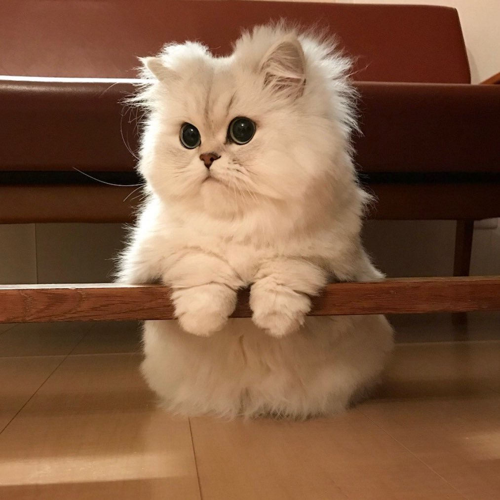

About
Adoppopotamus is a non-profit that helps homeless pets find their way into their forever homes through rescue and adoption.
We offer two-weeks or monthly trials. Remember: Dogs and cats who are taken into the care of shelters and rescue groups each year find themselves homeless through no fault of their own; “moving” and “landlord issues” are the top reasons people give up their pets.
Through us, you can adopt any kind of pet, whether it's an elephant or a kangaroo!
Contact us today for more info!